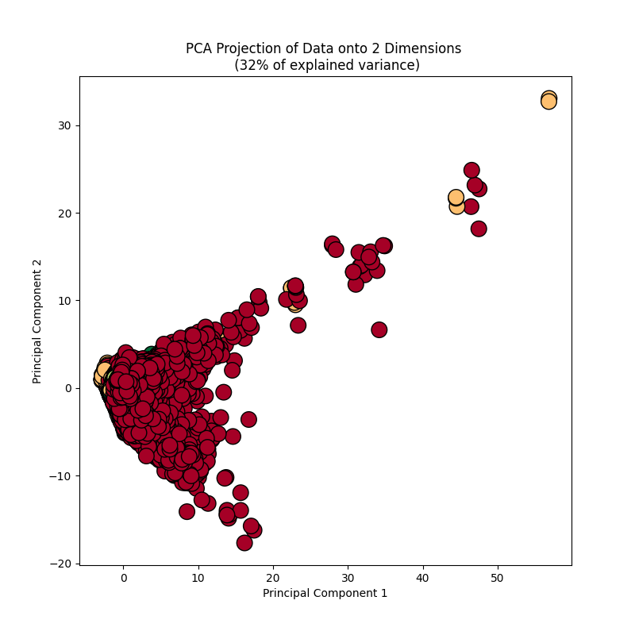
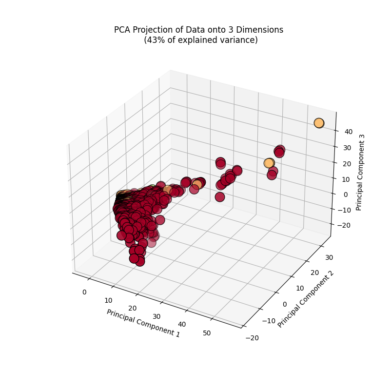

Principal Component Analysis (PCA) is, in a way, a special case of optimization with the aim of minimizing the the necessary components to explain the maximum amount of variability in the data. These components, referred to as the principal components (the source of the name), are a result of reducing the dimensionality of the overall dataset into eigenvectors and their values. Thus, the goal is, in effect, looking for the orthogonal vectors of the components to maximally explain the data. Because of the nature of the process, principal component analysis can only be performed on quantitative data. While it is technically possible to complete PCA on ordinal data that represent categories, it is strongly advised against because of the variability and issues that come about from representing a categorical variable as numeric. As such the following strictly attempts to reduce the dimensionality of the census data by selecting only quantitative, continuous data. In order to perform PCA, first the dataset must be cleaned as explained below. Then data is normalized (StandardScalar via sklearn for this project) and the covarince matrix, and their respective eigenvectors and their values are computed. For the sake of this project, the PCA function of sklearn completes this portion of PCA. Finally the eigenvectors are ranked in accordance to their eigenvalues (highest to lowest) and a set number of components is used to maximally explain the data while eliminating unnecessary components. Within this project, the aim of PCA is to reduce the dimensionality of the quantitative data in order to later classify poverty classes (or lack thereof). Preliminary exploratory data analysis leads to the prediction that some of the income variables may be redundant as there are both family and personal incomes that may contribute to overall financial status.
The dataset used for PCA uses the same cleaned data for EDA and further cleaning is explained below. To clean the dataset for PCA, first all non-numeric features in the data were dropped. One label was used for later classification, but ultimately, this too was dropped prior to implementing PCA. Succeeding PCA, this label was added back to the dataset for visualization purposes. Within the dataset itself, all rows that did not correspond to any of the 4 main categories within the poverty classification were additionally dropped. This left the remaining dataset to hold 12 numerical features and the one label from the original 38 features. The raw dataset is displayed first succeeding this paragraph and the final cleaned dataset (after to implementing standardization for PCA) is displayed immediately below that.
| age | job_industry_recode | school_enroll_lastweek | employment | fam_size | ... | fam_otc_med_costs | fam_rent_val | fips | state | state.1 | |
|---|---|---|---|---|---|---|---|---|---|---|---|
| 1 | 67 | Not in universe, or children | Not in univ. or children & Armed Forces | 0 | 0 | ... | 0 | 0 | ME | 4 | 23 |
| 2 | 74 | Not in universe, or children | Not in univ. or children & Armed Forces | 0 | 0 | ... | 60 | 0 | ME | 4 | 23 |
| 3 | 66 | Not in universe, or children | Not in univ. or children & Armed Forces | 0 | 1 | ... | 0 | 0 | ME | 3 | 23 |
| 4 | 68 | Not in universe, or children | Not in univ. or children & Armed Forces | 0 | 1 | ... | 0 | 0 | ME | 3 | 23 |
| 5 | 52 | Not in universe, or children | No | 0 | 1 | ... | 0 | 0 | ME | 3 | 23 |
5 rows × 38 columns
| age | fam_size | weekly_earnings | hours_worked | weeks_unemployed | ... | family_earn_ly | fam_med_costs | fam_outofpocket_med_costs | fam_otc_med_costs | fam_rent_val | |
|---|---|---|---|---|---|---|---|---|---|---|---|
| 0 | 1.210869 | -1.960160 | -0.22594 | -0.831263 | -0.078909 | ... | -0.746156 | -0.479016 | -0.651771 | -0.363262 | -0.079946 |
| 1 | 1.511344 | -1.960160 | -0.22594 | -0.831263 | -0.078909 | ... | -0.746156 | -0.479016 | -0.644156 | -0.318440 | -0.079946 |
| 2 | 1.167944 | 0.291096 | -0.22594 | -0.831263 | -0.078909 | ... | -0.746156 | -0.479016 | -0.651771 | -0.363262 | -0.079946 |
| 3 | 1.253794 | 0.291096 | -0.22594 | -0.831263 | -0.078909 | ... | -0.746156 | -0.479016 | -0.651771 | -0.363262 | -0.079946 |
| 4 | 0.566993 | 0.291096 | -0.22594 | -0.831263 | -0.078909 | ... | -0.422803 | -0.466527 | -0.477893 | -0.363262 | -0.079946 |
5 rows × 12 columns
When reducing the dimensionality of the data to only two principal components, roughly 32% of the variance is explained by the two dimensions. This ultimately leads to the suggestion that more dimensions are necessary to effectively explain the data. While 2 dimensions is the most easily understandable in the case of visualizations, the level of expalined variance is far too low to effectively use any given model with only two dimensions. This is clearly visible by the overlapping classes at the pont (x = 10, y = 2) Displayed below are the two most substantial of the principal components plotted against one another to classify poverty classes within the census data.
However, it is possible to increase the dimesnionality and still visualize the groupings of the data. By adding a single dimension and moving into 3D, visualizations become slighlty more complicated, but still comprehensible for the sake of analysis. After using the top three principal components, roughly 43% of variablility in the data is explained. This is substantially better than before, but still does not provide enough value to be able to use. Ultimately this means more of the quantitative dimensions are necessary to move forward with analysis. This can be seen by the same overlap of classes in the same area as before. Displayed below are the three principal components with the largest ability to expalin the most varince in the data.
This begins to beg the question, how many principal components are needed? Below is a table displaying the cumulative explained variance with each marginal principal component. As additional components are added, there is a diminishing marginal return on the explained variance. Ultimately, to effectively explain at least 95% of the data nearly all the principal components are needed as 11 of the 12 would be necessary. The table following this displays the top three eigenvalues in the data. These correspond to the same three eigenvalues used in the 3D image above. This leaves all features necessary to explaine 95 % of the variance except for the family rental value. This makes sense within the data as said feature only explains income for landlords. Through PCA, while not substantially, this does reduce the data within the set by one feature which still assists in improving computing efficiency. Additionally, the most substantial features in explaining variability are age, federal gross income adjusted and weekly earnings as demonstrated by the values of the top three aigenvalues below. Overall, PCA is not a substantial manner in reducing features within this specific dataset suggesting that there may be nonlinear relationships between the variables and other methods of dimension reduction may be necessary.
| Principal Component | Cumulative Variance | |
|---|---|---|
| 0 | PC1 | 0.176995 |
| 1 | PC2 | 0.315103 |
| 2 | PC3 | 0.426452 |
| 3 | PC4 | 0.513234 |
| 4 | PC5 | 0.596199 |
| 5 | PC6 | 0.673469 |
| 6 | PC7 | 0.747989 |
| 7 | PC8 | 0.817793 |
| 8 | PC9 | 0.880117 |
| 9 | PC10 | 0.936309 |
| 10 | PC11 | 0.974694 |
| 11 | PC12 | 1.000000 |
| Principal Component | EigenValues | |
|---|---|---|
| 0 | PC1 | 0.176995 |
| 1 | PC2 | 0.138108 |
| 2 | PC3 | 0.111349 |